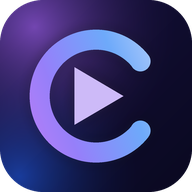

Dis « Clipia ».
Elle crée avec toi.
Un studio créatif IA qui t'écoute, se souvient et travaille sur ta machine : image, vidéo, musique, texte, projets et agents. Modèles gratuits hors ligne ou tes propres clés.
🎬 Découvre Clipia en 1 minute
Avec la voix de Clipia et une ambiance afro-house. Mets le son 🔊
Ce que fait Clipia
Un seul endroit pour créer, avec le moteur IA de ton choix.
Comme un assistant vocal : appelle-la
Active le mode appel 📣 : dis « Clipia », elle répond « Oui ? », écoute ta demande, puis retourne en veille. Tu peux aussi tout dire d'un trait : « Clipia, fais-moi un clip. »
Le mode appel utilise la reconnaissance vocale intégrée à Chrome ou Edge : la transcription passe par le service du navigateur, ce n'est donc pas un mode 100 % hors ligne. Le micro n'est jamais actif sans que tu aies cliqué sur 📣, et tu peux le couper à tout moment.
Clipia OS : un vrai système, sur une clé USB
Un système Linux complet (base Ubuntu 24.04) qui démarre depuis une clé USB, avec bureau, navigateur, réglages, réseau, pilotes… et Clipia intégrée.
Mémoire permanente sur la clé : conversations, projets et souvenirs restent d'un démarrage à l'autre. Le « Cerveau du système » observe la machine, apprend et te propose des améliorations expliquées, sans rien changer sans ton accord.
Honnêtement : testé en machine virtuelle (BIOS et UEFI), pas encore sur du matériel réel. PC x86-64 uniquement (pas les Mac Apple Silicon), Secure Boot à désactiver.
Gratuit pour commencer, options payantes ensuite
Les modèles locaux sont illimités. Les offres ci-dessous se choisissent dans l'application (menu Abonnement).
Découverte
0 €
- IA locales illimitées
- 2 clips par mois en cloud
- Export 1080p avec filigrane
- 1 connecteur
Créateur
12 € / mois
- 20 clips par mois
- Tous les modèles cloud
- Export 1080p sans filigrane
- Paroles karaoké automatiques
Studio Populaire
29 € / mois
- 100 clips par mois, export 4K
- Tous les connecteurs
- Publication YouTube/TikTok
- Workflows programmés
Pro / Label
79 € / mois
- Clips illimités, multi-artistes
- API Clipia + MCP
- Marque blanche
- Support prioritaire
Le paiement en ligne s'active dans l'application une fois le service de paiement configuré par l'éditeur. Les modèles payants des fournisseurs (OpenAI, Claude…) se facturent chez eux, avec ta propre clé.
📱 Installer Clipia sur ton téléphone
Une seule page à ouvrir. Pas de magasin d'applications, pas de PC allumé, pas de fichier à télécharger.

Clipia — application téléphone
Conversation vocale, création, organisation. Fonctionne sur Android et iPhone, en plein écran, avec son icône sur l'écran d'accueil.
Android (Chrome) : un bouton « Installer » apparaît.
iPhone (Safari) : Partager → « Sur l'écran d'accueil ».
L'APK installe Clipia comme une vraie application, avec la voix du téléphone.
Télécharger
Version 3.0.0 · gratuit · Node.js déjà inclus.
Les logiciels ne sont pas signés par un éditeur payant : Windows (« Exécuter quand même ») et macOS (clic droit → Ouvrir) afficheront un avertissement normal. Vérifie l'empreinte SHA-256 sous chaque fichier si tu veux t'assurer qu'il n'a pas été modifié.
Tutoriels d'installation
Choisis ton système. Compte 3 minutes.
Windows — installeur
- Télécharge
Clipia-Setup-3.0.0-windows-x64.exe. - Double-clique. Si Windows affiche « protégé votre PC » : Informations complémentaires → Exécuter quand même.
- Suivant → Installer → Terminer (aucun droit administrateur).
- Lance Clipia depuis le Bureau : ton navigateur s'ouvre sur Clipia.
Android et iPhone
- Ouvre l'application Clipia dans le navigateur du téléphone.
- Android (Chrome) : appuie sur Installer dans la bannière, ou menu ⋮ → Installer l'application.
- iPhone (Safari) : bouton Partager → Sur l'écran d'accueil → Ajouter.
- Dans l'app, ouvre les réglages ⚙ et colle une clé OpenRouter (gratuite) : Clipia choisit alors toute seule un bon modèle gratuit.
- Elle fonctionne ensuite sans ton PC, partout, et s'ouvre même hors ligne.
Windows — portable (clé USB)
- Télécharge le zip
Clipia-Portable-3.0.0-windows-x64.zip. - Clic droit → Extraire tout, sur le Bureau ou directement sur ta clé USB.
- Ouvre le dossier et double-clique Clipia.exe. Rien n'est installé.
- Pour quitter : Quitter-Clipia.exe. Tes données restent dans le dossier
donnees: copie-le pour tout emporter.
macOS
- Télécharge le fichier macOS et dézippe-le.
- Glisse Clipia.app dans Applications.
- Premier lancement : clic droit → Ouvrir → Ouvrir (l'app n'est pas signée par Apple).
- Si macOS dit « endommagé » : Terminal, puis
xattr -cr /Applications/Clipia.app.
Linux (Debian, Ubuntu, Mint)
- Télécharge
clipia_3.0.0_amd64.deb. - Dans un terminal :
sudo apt install ./clipia_3.0.0_amd64.deb - Lance
clipiaou l'icône du menu Applications.
Clipia OS (clé USB bootable)
- Télécharge les 4 parties dans un même dossier, puis reconstitue l'archive — Windows (invite de commandes) :
copy /b Clipia-USB.iso.zip.part00 + Clipia-USB.iso.zip.part01 + Clipia-USB.iso.zip.part02 + Clipia-USB.iso.zip.part03 Clipia-USB.iso.zip; Mac/Linux :cat Clipia-USB.iso.zip.part0* > Clipia-USB.iso.zip. - Dézippe
Clipia-USB.iso.zippour obtenirClipia-USB.iso. - Écris-la sur une clé de 8 Go ou plus avec balenaEtcher (efface la clé).
- Redémarre, ouvre le menu de démarrage (F12, Échap, F9 ou Option) et choisis la clé. Désactive le Secure Boot si besoin.
Premier lancement : Clipia se met en route
- Option rapide (recommandée) : crée une clé gratuite sur console.groq.com/keys, colle-la dans l'assistant de bienvenue de Clipia et clique « Tester et activer ».
- Option hors ligne : installe Ollama, puis clique « Installer Qwen en local » : le meilleur modèle pour ta RAM est téléchargé.
- Pour Claude, OpenAI, Gemini, Suno, ElevenLabs et les autres : Coffre de clés, tes clés restent chiffrées chez toi.
- Dis ce que tu veux créer : Clipia te propose des solutions et te guide pas à pas.
Questions fréquentes
Le créateur
Clin Fabrice — CLENDAX
Clipia est créé et maintenu par Clin Fabrice, basé à Flize (Ardennes, France).
Contact : fabriceclin02@gmail.com
💬 WhatsApp : +33 7 51 88 06 50